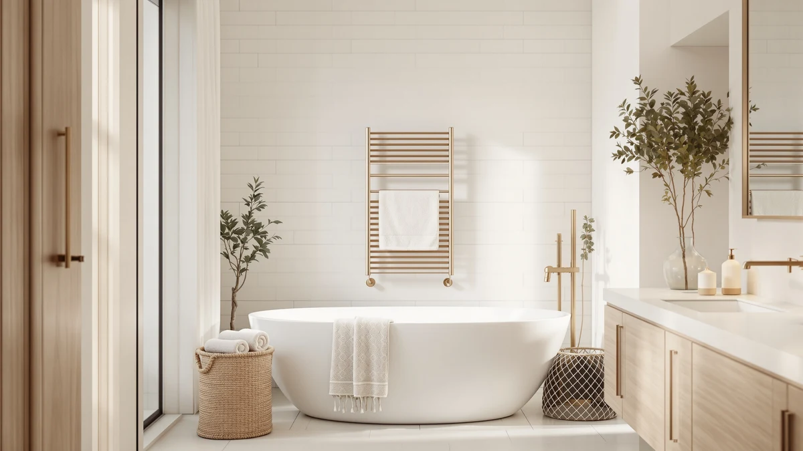

Best Towel Warmer vs Steamer (2026) | Best Towel Warmers
Prices and picks verified as of August 2026. Independent, reader-supported reviews.


Things to Know Before You Buy
- A towel warmer keeps a towel dry and warm for the moment you step out of the shower, while a steamer only heats fabric during the seconds you hold it against the towel.
- Wall-mounted and freestanding warmers run $60 to $200 and use 40 to 150 watts, about the draw of a couple of light bulbs.
- A handheld steamer costs $25 to $60, folds into a drawer, and doubles as a clothes steamer for wrinkled shirts.
- Neither appliance dries a soaking towel fast. A warmer works best on a damp or dry towel, and a steamer adds warmth for a minute or two at most.
- Bucket-style warmers heat one rolled towel, while ladder racks warm several flat, so match the style to how many towels your household uses.
The towel warmer vs steamer question comes up whenever you want a warm, dry towel waiting for you after a shower, and the two appliances solve that problem in different ways. A towel warmer heats the towel itself and keeps it dry and toasty on a rack or inside an insulated drum. A steamer boils water and pushes hot vapor through fabric to loosen wrinkles and add a burst of warmth. You are choosing between steady, hands-off comfort and quick, on-demand heat.
You will pay more upfront and give up wall or counter space for a warmer, but you get a spa feel every day with almost no effort. A steamer costs less, tucks into a drawer, and handles clothes as well as towels, though it cannot hold a towel warm for the second you step out of the shower. Below we break down how each one is built, what it costs to run, and which household each one fits.
Quick Answer
For daily warm, dry towels with no effort, a wall-mounted towel warmer wins, and the APORDROUCA Electric Towel Warmer is the one we would mount first. If you want low cost, portability, and a tool that also steams clothes, a handheld steamer or the budget StateRiver warmer makes more sense. The towel warmer vs steamer choice comes down to whether you value steady warmth or flexibility and price.
What is Towel Warmer?
A towel warmer is built for one job: keeping your towel warm and dry. It comes in three main shapes. A wall-mounted ladder rack, like the APORDROUCA, bolts to the bathroom wall and heats several bars at once. A freestanding rack plugs into any outlet and stands next to the tub. A bucket or bin style, like the StateRiver, heats a single rolled towel inside an insulated drum.
Most electric models draw 40 to 150 watts, roughly the same as a couple of incandescent bulbs, and reach a surface temperature of 100 to 150 degrees Fahrenheit. You hang a damp or dry towel on the bars, switch it on, and in 20 to 40 minutes the towel feels warm to the touch. Many units add a timer, so you can set them to heat before your morning shower.
A towel warmer does not wash or deep-dry a soaked towel, and it will not remove wrinkles from a shirt. You buy one for the simple comfort of a warm towel and the side benefit of drier towels that grow less mildew between uses.
What is Steamer?
A steamer is a handheld or upright appliance that boils water and pushes hot vapor through fabric. You probably know it as a clothes tool, but the same burst of steam warms and freshens a towel in seconds. You fill a small tank, wait 30 to 45 seconds for it to heat, and run the head across the fabric.
A handheld steamer weighs a pound or two, folds down small enough for a drawer or a suitcase, and costs $25 to $60. It heats fabric to well over 200 degrees Fahrenheit at the nozzle, which relaxes wrinkles and kills some surface bacteria and odor. Held against a towel, that heat feels pleasant for a minute or two, then fades as the fibers cool.
A steamer cannot hold a towel warm the way a heated rack does, and it adds moisture rather than removing it, so a damp towel stays damp. What you gain is versatility. One tool warms a towel, de-wrinkles a work shirt, and refreshes upholstery, then stows away when you finish.
Head-to-Head: Build Quality & Durability
Build quality separates the two categories clearly. A towel warmer is a fixed appliance made of coated steel or aluminum bars with a sealed heating element. Wall-mounted models like the APORDROUCA use thicker tubing and plug-in or hardwired connections rated for years of daily cycling. With no moving parts and no water tank, the main failure point is the heating element, which usually lasts 8 to 12 years. Freestanding and bucket warmers add a plastic base or drum that can crack if you drop it, but they still hold up well under normal bathroom use.
A steamer packs a pump, a heating chamber, and a plastic water tank into a small handheld body. Those parts see stress every time you fill, heat, and shake out mineral water. Hard-water scale builds inside the chamber and clogs the nozzle, so a steamer you never descale often fades within two to three years. The plastic tank and the trigger are the parts you replace first.
For pure longevity, the towel warmer wins. A steamer trades that durability for portability and a second job in your closet.
Head-to-Head: Price & Value
Price is where the towel warmer vs steamer gap is widest. A quality wall-mounted warmer like the APORDROUCA runs about $99, and larger designer ladder racks climb past $200 before installation. The budget StateRiver bucket warmer sits at roughly $33. Running costs stay low either way: at 100 watts for an hour a day, a warmer adds about $4 to $5 to your yearly electric bill.
A handheld steamer costs $25 to $60 up front and pennies per use, since you run it only for a minute or two at a time. Over five years, though, you may replace a cheap steamer once or twice as the pump wears out, while a good warmer keeps going. Count a steamer as doubling for laundry and its value climbs, because it also keeps your clothes pressed.
Head-to-Head: Use Experience
Day to day, the two feel very different. With a warmer, you set it and forget it. You drape the towel over the bars the night before or flip a timer, and by the time you finish your shower the towel is warm and slightly drier than it started. There is no waiting and nothing to hold. The bucket-style StateRiver asks you to roll one towel, press a button, and wait a few minutes, which suits a single user more than a busy family.
A steamer wants your hands and your attention. You fill the tank, wait for heat, then pass the head over the towel while you grip it. The warmth arrives fast but lasts only a minute or two, so you steam right before you use the towel. That works if you want a quick warm-up on demand, and it shines when you also need to press a shirt or freshen a jacket in the same few minutes.
If your goal is effortless comfort, the warmer wins the daily routine. If you value speed, portability, and a tool that multitasks, the steamer earns its spot.
When to Choose Towel Warmer
Choose a towel warmer if a warm, dry towel every morning is the whole point. The warmer is the right call when you have wall space or a free corner, you shower on a routine, and you want zero effort once it is installed. Families benefit from ladder racks like the APORDROUCA that heat several towels at once, so everyone gets a warm one. It also helps in damp bathrooms, where the gentle heat dries towels between uses and slows mildew and that musty smell.
You should also lean toward a warmer if you dislike fiddling with gadgets. Set a timer, and the towel is ready without you thinking about it. The trade-offs are the higher upfront cost, the need to mount or place the unit, and the fact that it does one job and one job only.
When to Choose Steamer
Choose a steamer if flexibility and budget matter more than steady warmth. The steamer fits renters who cannot drill into walls, travelers who want a warm towel in a hotel, and anyone in a small bathroom with no room for a rack. It costs a fraction of a mounted warmer and hides in a drawer between uses.
The bigger draw is the second job. A handheld steamer presses shirts, freshens suits, and revives curtains and upholstery, so it earns its keep beyond the bathroom. If you already own one for clothes, using it to warm a towel costs you nothing extra. You accept two limits: the warmth lasts only a minute or two, and you have to stand there and hold both the steamer and the towel. For quick, on-demand heat from a tool that does more, the steamer makes sense.
Our Top Picks
If you have landed on a warmer, these are the two we would buy: one for a full-family wall install and one for a single user on a budget.

Editor’s Pick
Electric Towel Warmer Wall Mounted
Mounts to the wall and heats several bars at once, so a warm towel is ready for the whole family on a timer.
$98.99
Check Price on Amazon
Best Value
StateRiver Hot Towel Warmer Rapid
A bucket warmer that heats one rolled towel fast for about $33, ideal for a single user or a tight bathroom.
$32.99
Check Price on AmazonCan a clothes steamer replace a towel warmer?
A steamer can warm a towel for a minute or two, but it cannot keep one warm and dry the way a heated rack does.
Does a towel warmer actually dry towels?
Yes, within limits.
Frequently Asked Questions
Can a clothes steamer replace a towel warmer?
A steamer can warm a towel for a minute or two, but it cannot keep one warm and dry the way a heated rack does. A steamer adds moisture, while a towel warmer removes it. If you want a warm towel waiting when you step out of the shower, a warmer does the job better. If you want an occasional quick warm-up plus a tool for clothes, a steamer works.
Does a towel warmer actually dry towels?
Yes, within limits. A towel warmer keeps an already damp or dry towel warm and helps it dry faster between showers, which cuts down on mildew and odor. It will not dry a soaking-wet towel quickly the way a clothes dryer does, since it runs at low wattage and relies on gentle, steady heat over 20 to 40 minutes.
How much does it cost to run a towel warmer?
Most electric towel warmers draw 40 to 150 watts. Running a 100-watt model one hour a day for a year costs about $4 to $5 at average U.S. electricity rates. A timer keeps that cost low by heating only around your shower schedule instead of all day.
Is a steamer or a towel warmer better for a small apartment?
A handheld steamer usually fits a small apartment better. It needs no wall mounting, tucks into a drawer, and doubles as a clothes steamer, so it earns its space. A freestanding or bucket-style towel warmer like the StateRiver is a good middle ground if you still want steady warmth without drilling.
Are towel warmers safe to leave on?
Most modern towel warmers are built for continuous use and run at surface temperatures around 100 to 150 degrees Fahrenheit, warm but not scorching. For peace of mind, pick a model with a built-in timer or auto shut-off, and keep it clear of curtains or paper. A steamer, by contrast, should never be left running, since it heats water actively and can spit hot vapor.
Final Verdict
There is no single winner here, just the right tool for your routine. For daily, effortless warmth and drier towels, the APORDROUCA Electric Towel Warmer is the one to mount, while the budget StateRiver warmer covers single users who want the same comfort for less. Pick a steamer instead when you rent, travel, or want one gadget that both warms towels and presses clothes.